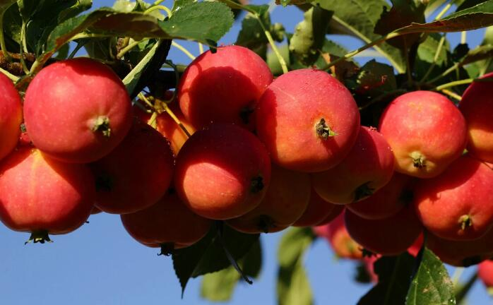

曾风靡一时的沙果，为何近年来消失不见了？
随着农业技术的不断发展，现在的水果品类是越来越多了，很大程度上丰富了我们的生活。但随着新品种的不断发展，一些老品种也被逐渐淘汰掉了，很多小时候经常吃的水果，现在却成了难得一见的稀罕物，其中沙果就是一种。
记得小时候，村里家家户户都种着沙果树，沙果的个头比山楂大一点，但吃起来像苹果，酸酸甜甜的，尤其是香气浓郁，在家放一些，满屋子都是香的。但没熟的沙果是很涩的，那个时候，常常会因为等不及成熟，偷偷去摘了吃，一边涩的乱叫，一边却在开心的笑。

现在的人，知道沙果的人很少了。今年8月份，我们去山里玩，无意中在服务区，看到有沙果卖，激动地买了2斤，每斤8元，品质还不错。拿到车上，一个旅游大巴，48个人，竟然只有年龄大些的认识，年轻人都误以为是什么苹果新品种。
其实沙果是我国特有的一个树种，据文献记载，早在明代就已大量栽培，又名林檎、花红果、萘子。主要分布于西北、华北、东北以及长江以南各省。它既可鲜食，又可以制作果酒、饮料、果脯、果酱等诸多深加工产品。性甘温，能消食化滞、散瘀止痛，很受大家的欢迎和喜爱。那么这么好的果子为什么却渐渐消失在人们的视线里？
其实沙果不是真的消失了，而是因为种植面积大幅减小，不常见了。这与沙果的生长周期慢、储存时间短也有重要关系，成熟的沙果贮存时间是3—5天，过了贮存期，果实就会发黑、果肉腐烂。受客观因素的影响，在人们普遍追求经济效益的大趋势下，沙果的经济价值逐渐难以满足果农们的期望，因此慢慢被遗弃了。
吃了那么多年的沙果，现在才知道，沙果其实和苹果一样，也是有很多种类的，包括龙冠、K9、幺二三、黄太平、大秋、串铃、山里红等品种，这些品种各有特色，晚熟型的一半在9月份成熟，早熟型一般在7月份成熟。
本站文章均来自互联网，仅供学习参考，如有侵犯您的版权，请邮箱联系我们删除！
 上一篇
上一篇